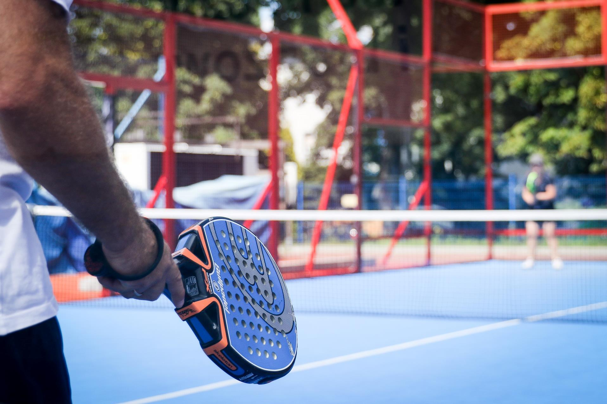
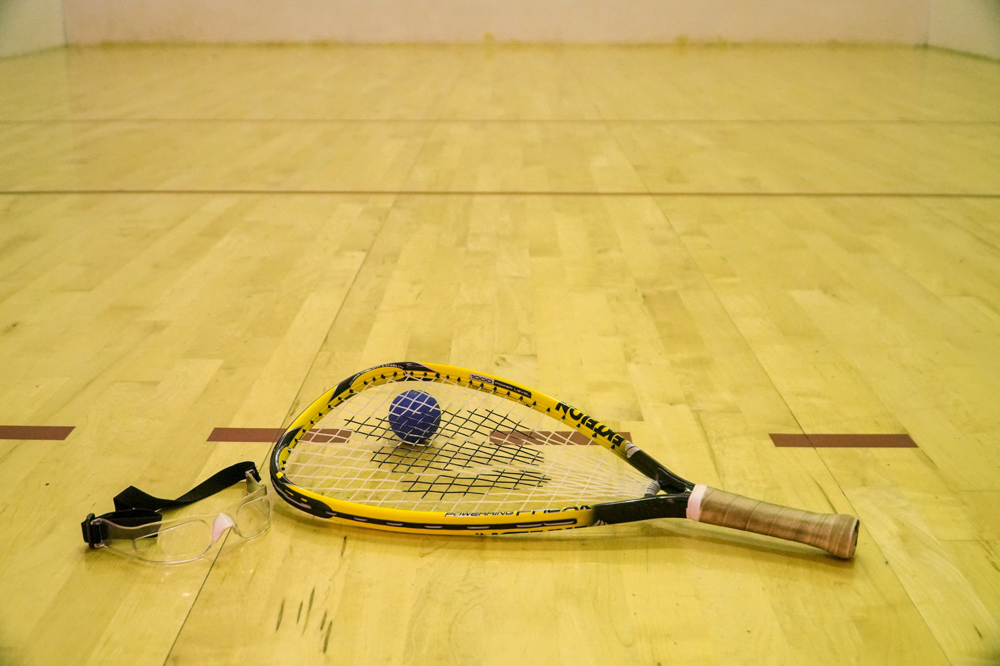
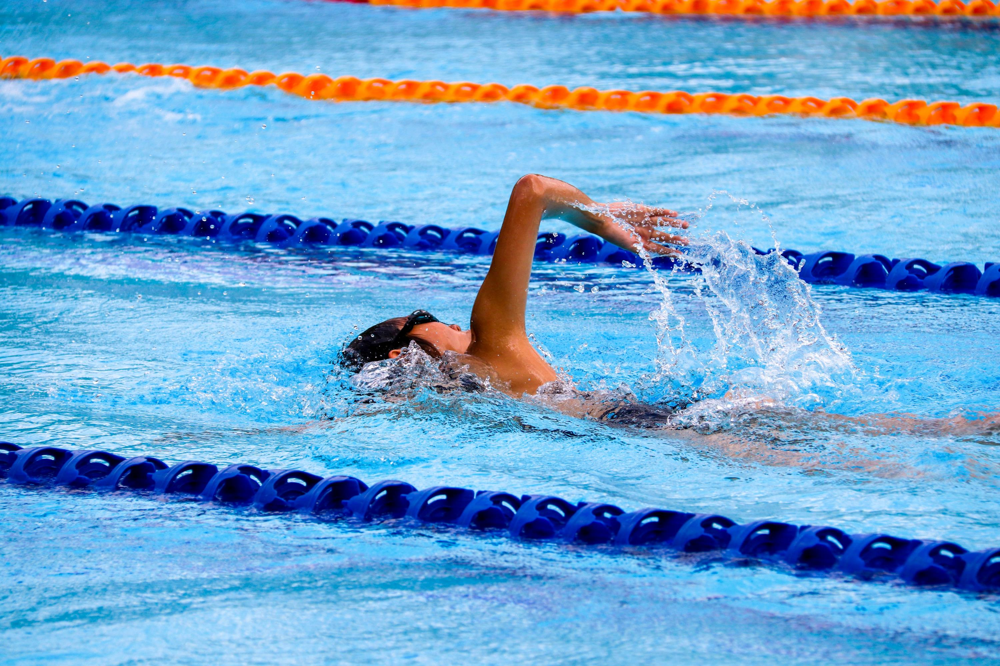
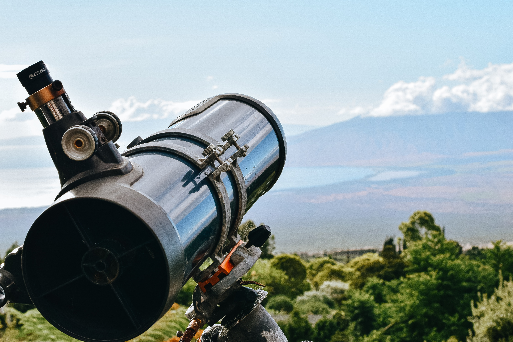

Dit beoefende ik eigenlijk al 5 jaar lang maar dan sporadisch een paar keer in de zomerperiode, ik vond het altijd al super leuk maar toen waren er nog niet veel kandidaten om mee te doen of zelfs padelvelden in de buurt.
Het was pas sinds 2020 dat er overal padelvelden gelijk paddenstoelen uit de grond schoten en dan sinds de zomer van 2023 dat ik effectief een groep had gevonden die meerdere keren per week wilden spelen, dus deden we dat ook.
Het speelt eigenlijk een beetje zoals een combinatie tussen tennis en Squash en haalt het beste in beide sporten naar boven, het is ZEER gevariëerd en verslavend. Ik wou dat ik het elke dag kon doen.

Squash

Sinds 2016 squashte ik bijna elke week 1 tot 2 keer maar dit heeft nu plaats moeten maken voor padel, dit omdat padel net dat tikkeltje leuker en gevariëerder is. Maar als iemand mij nu zou uitdagen voor squash zal ik dit zeker niet weigeren.
Squash is een heel competitieve intensieve sport en dit zorgde ervoor in het begin dat mijn hart vaak boven de 200 bpm schoot wat dan mij stimuleerde om aan mijn conditie te werken door middel van lopen en fitness. Met andere woorden ligt squash
eigenlijk aan de basis van alle andere sporten die ik nu beoefen en daar ben ik deze periode heel dankbaar voor.
Lopen & Zwemmen
Deze 2 sporten zijn eigenlijk mijn back-up sporten, daarmee bedoel ik dat ik ze beoefen wanneer ik die week niet ga of kan padellen om toch mijn conditie op peil te houden. Persoonlijk vind ik wel dat er niets leuker is dan te gaan lopen in
de bossen of een afgezonderde plaats met oortjes in en muziek of een podcast op de achtergrond maar dit combineren met intensieve padel is iets te belastend voor de benen. Mijn records momenteel zijn: 5km op 23 minuten en 10km op 54 minuten.
Ooit ga ik als mijlpaal wel een marathon proberen uit te lopen. Bij zwemmen haal ik rust uit de stilte onder water en het zweven door het water, daar kan ik 2500m halen op 54 minuten.

Gaming
Dit is een heel gevariëerde hobby welke ik al levenslang uitvoer, vroeger misschien wel 20-30 uur per week maar tegenwoordig zal het meer iets van 3-5 uur per week zijn. En met gevariëerd bedoel ik dat je zelf kan kiezen welke stijl van
spellen je wilt doen, heel intensieve en competitieve als je een trage rustige week achter de rug hebt of juist een hele chille relaxing game waar niets moet als je overspoeld werd door stress. Voorbeelden van games die ik doe: League of Legends,
Super Smash Brothers Ultimate, Starcraft 2, Zelda, Sackboy, It Takes Two, overcooked.
Crypto
Hier ben ik in 2016 mee begonnen en kan ik ook niet meer loslaten, het is niet echt een hobby meer maar een levenstijl. Als ik 's morgens van mijn eerste koffie sip staat er wel een podcast te draaien over de laatste nieuwe weetjes die ontwikkeld zijn of
tijdens het auto rijden heb 8 op de 10 ook een podcast aanstaan over crypto. Ook lees ik veel fora, twitterkanalen of cryptonieuwsartikels. Zelf ben ik ook nog bezig met het ruilen van crypto, de protocols leren en gebruiken, zelf nodes op te zetten en
te runnen die de netwerken helpen beveiligen of transacties mogelijk maken.
Spiritualiteit
Deze kant ben ik sinds 2020 ook aan het ontwikkelen door middel van podcasts te luisteren, boeken te lezen, zelf te mediteren en meer op mijn voeding te letten. Ook ga ik soms naar klankbaden, regressietherapiëen of andere spirituele sessies.
ik heb ondertussen ook mijn eigen klankschalenset gekocht waar ik soms voor vrienden of familie mijn eigen mini klankbadsessie geef. Ik wil naar de toekomst toe nog een hele hoop instrumenten bemachtigen om zo mijn sessies uit te kunnen breiden
met als bedoeling te kunnen helpen om van blokkades en stress af te geraken.
Astronomie
Deze hobby heb ik er nog maar pas sinds de zomer van 2023 bij gepakt door een eigen telescoop te kopen, dit komt omdat ik altijd al gefascineerd was door de ruimte en wij al van kleins af aan elke zomer naar de meteorenregen keken. Het is de
bedoeling om tijdens warme zomeravonden hier de ruimte mee te verkennen en beter met het apparatuur leer om te gaan zodat ik ooit prachtige foto's van planeten, sterrenstelses of andere mysterieuze dingen kan nemen.
